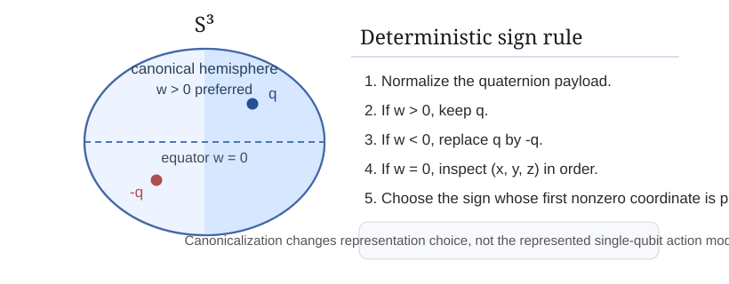
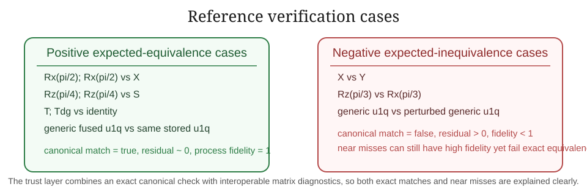

1. Introduction
Once a compiler begins to optimize circuits, a practical question appears immediately: how is correctness certified? Papers 2 and 3 in this series introduced a canonical quaternionic single-qubit intermediate representation and a local fusion pass on top of it. Those papers define the optimization layer. The present paper defines the trust layer.
The main concern is not whether quaternionic compilation is mathematically elegant. It is whether an optimized output can be verified in a way that is deterministic, reproducible, and legible to both quaternion-native and matrix-native toolchains. This paper therefore focuses on canonical equivalence, preserved invariants, and validation procedures rather than on additional optimization heuristics.
The central design choice is to separate the authoritative equivalence criterion from supporting diagnostics. The authoritative criterion is canonical quaternion equality after normalization and sign-canonicalization. Supporting matrix diagnostics such as phase-aware residual, trace overlap, and process fidelity are then used as interoperability tools rather than as replacements for the canonical test.
2. Background and dependency on papers 1–3
Paper 1 fixed the quaternion--SU(2) map Φ and the passage from single-qubit gates in U(2) to determinant-one representatives modulo global phase. Paper 2 defined the canonical single-qubit IR object u1q(w, x, y, z) with normalization and deterministic sign-canonicalization. Paper 3 defined local quaternionic gate fusion for single-qubit segments and a layered reconstruction operator.
The present paper inherits all of those conventions without modification. In particular, the sign ambiguity q ~ -q remains the only residual ambiguity in the quaternionic representation, and the canonicalization rule based on w > 0 plus the equatorial tie-break remains the unique representative-selection mechanism.

3. Equivalence and canonicalization criteria
This follows directly from the fixed map Φ and the deterministic representative rule of paper 2. Once both outputs are reduced to the same canonical quaternion, they represent the same determinant-one single-qubit action modulo the sign pair {q, -q}.
This is the reproducibility property needed for trustworthy compiler output. If the same segment action is encountered again, the same canonical quaternion is produced regardless of the source syntax used to express it.

4. Invariants preserved by quaternionic compilation
The trust layer is not only about an equality test. It is also about understanding what properties must remain invariant under optimization.
- unit norm after normalization,
- canonical sign choice under the paper-2 rule,
- equivalence of the represented SU(2) action modulo global phase,
- stability of canonical output form under repeated verification, and
- agreement between canonical and matrix diagnostics up to tolerance in numerical settings.
This proposition is not a new optimization statement; it is the verification statement that the compilation pipeline preserves exactly the object it claims to preserve.
5. Validation procedures for optimized segments
The paper recommends a layered validation procedure:
- translate both original and optimized outputs into canonical quaternions,
- apply the authoritative canonical equality test,
- if desired, compute matrix-based diagnostics under Φ, and
- record canonical output form and diagnostics for reproducibility.

6. Interoperability with matrix-based toolchains
Adopting a quaternionic compiler layer does not require abandoning matrix-native workflows. Because the fixed map Φ is explicit, every canonical quaternion can be exported as an SU(2) matrix for external checking, logging, or partner integration.
This proposition is the bridge to existing toolchains. The canonical quaternion is the trusted primary artifact; the matrix image provides an auditable secondary view.
7. Reference verification corpus and results
The shipped verification harness evaluates seven reference comparisons: four positive cases expected to pass and three negative cases expected to fail. The positive cases include exact named-gate recovery, identity elimination, and a generic canonical u1q output. The negative cases include wrong named-gate substitution, wrong-axis substitution, and a perturbed generic primitive.
| Metric | Measured value |
|---|---|
| Total verification cases | 7 |
| Positive cases | 4 |
| Negative cases | 3 |
| Positive cases passed by canonical check | 4 |
| Negative cases rejected by canonical check | 3 |
| All cases consistent with expectation | true |
On the positive cases, the canonical equality test succeeds and the matrix diagnostics report residuals near zero with process fidelity equal to one to numerical precision. On the negative cases, the canonical test rejects the pair, while the diagnostics expose the mismatch numerically: the wrong-axis and wrong-gate substitutions produce clear residuals and reduced overlap, and the perturbed generic primitive shows that very high process fidelity alone is not a substitute for canonical equivalence.
7.1 Positive cases
Rx(pi/2) ; Rx(pi/2)vsXRz(pi/4) ; Rz(pi/4)vsSH ; T ; Rz(pi/3)vs exact canonicalu1q(...)T ; T†vs identity elimination
7.2 Negative cases
XvsYRz(pi/3)vsRx(pi/3)- exact generic
u1q(...)vs a perturbed nearby tuple
The final case is particularly important for trust: a candidate may achieve process fidelity very close to one while still failing canonical equivalence. This is why the paper treats fidelity as a diagnostic, not as the authoritative yes/no proof of exact compiled equivalence.

8. Standard mathematics vs. RQM Technologies framing
8.1 Standard ingredients
The standard ingredients are the passage from U(2) to SU(2) modulo global phase, the unit-quaternion model of SU(2), the sign ambiguity q ~ -q, and familiar matrix diagnostics such as trace overlap and process fidelity.
8.2 Project-specific trust-layer choices
The project-specific contribution is the verification architecture: canonical quaternion equality as the authoritative equivalence check, deterministic canonical output forms for reproducibility, an explicit list of preserved invariants, and a matrix-based interoperability layer for external toolchains and partner review.
9. Scope, limitations, and non-claims
- This paper does not define a full formal verification system for arbitrary multi-qubit circuits.
- It does not replace matrix-native diagnostics; it positions them as supporting tools.
- It does not claim that process fidelity alone proves exact compiled equivalence.
- It does not prove correctness of arbitrary hardware execution.
- It does not optimize circuits; it validates optimized single-qubit segments produced elsewhere in the series.
10. Conclusion
The trust problem in quaternionic compilation is solved here by separating exact proof from supporting diagnostics. Exact proof is supplied by canonical quaternion equality under the fixed normalization and sign conventions. Supporting diagnostics are supplied by the matrix image under Φ, including phase-aware residuals, trace overlap, and process fidelity. Together these give a trust layer that is deterministic, reproducible, auditable, and interoperable with matrix-based toolchains.
Appendix A. Verification artifact note
The results reported here are generated by the shipped script artifacts/code/verify_canonical_equivalence.py, which writes verification_results.json. The verifier uses only the Python standard library and the fixed quaternion convention inherited from papers 1–3.
References
- Cross, Andrew W., Ali Javadi-Abhari, Thomas Alexander, Niel de Beaudrap, Lev S. Bishop, Steven Heidel, Colm A. Ryan, Prasahnt Sivarajah, John A. Smolin, Jay M. Gambetta, and Blake R. Johnson. “OpenQASM 3: A Broader and Deeper Quantum Assembly Language.” ACM Transactions on Quantum Computing 3(3), Article 12, 2022. DOI: 10.1145/3505636.
- Hall, Brian C. Lie Groups, Lie Algebras, and Representations: An Elementary Introduction, 2nd ed. Springer, 2015.
- Kuipers, Jack B. Quaternions and Rotation Sequences: A Primer with Applications to Orbits, Aerospace, and Virtual Reality. Princeton University Press, 1999.
- Nielsen, Michael A., and Isaac L. Chuang. Quantum Computation and Quantum Information, 10th Anniversary Edition. Cambridge University Press, 2010.
- Smith, Robert S., Michael J. Curtis, and William J. Zeng. “A Practical Quantum Instruction Set Architecture.” arXiv preprint arXiv:1608.03355, 2016.